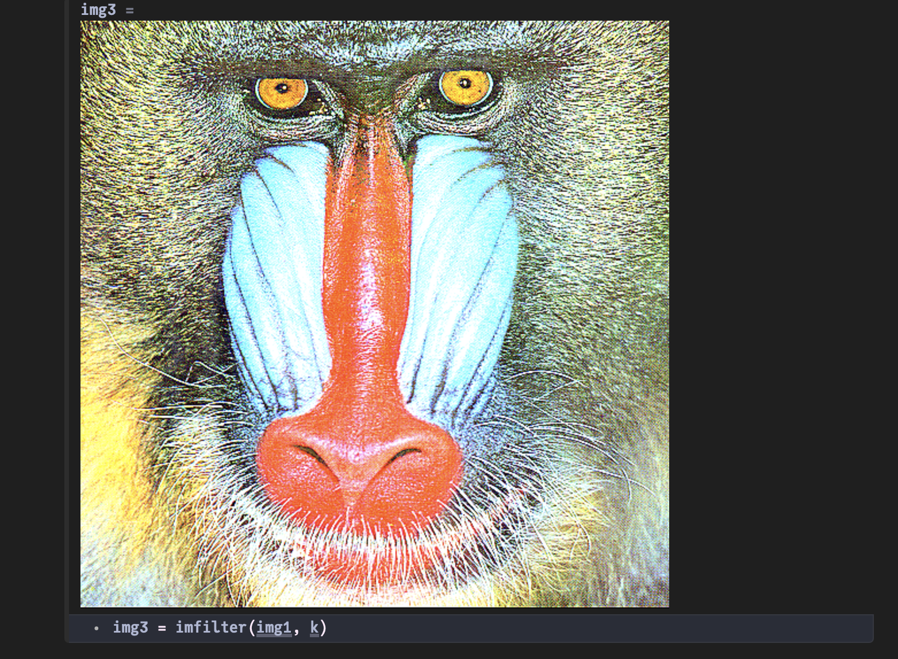
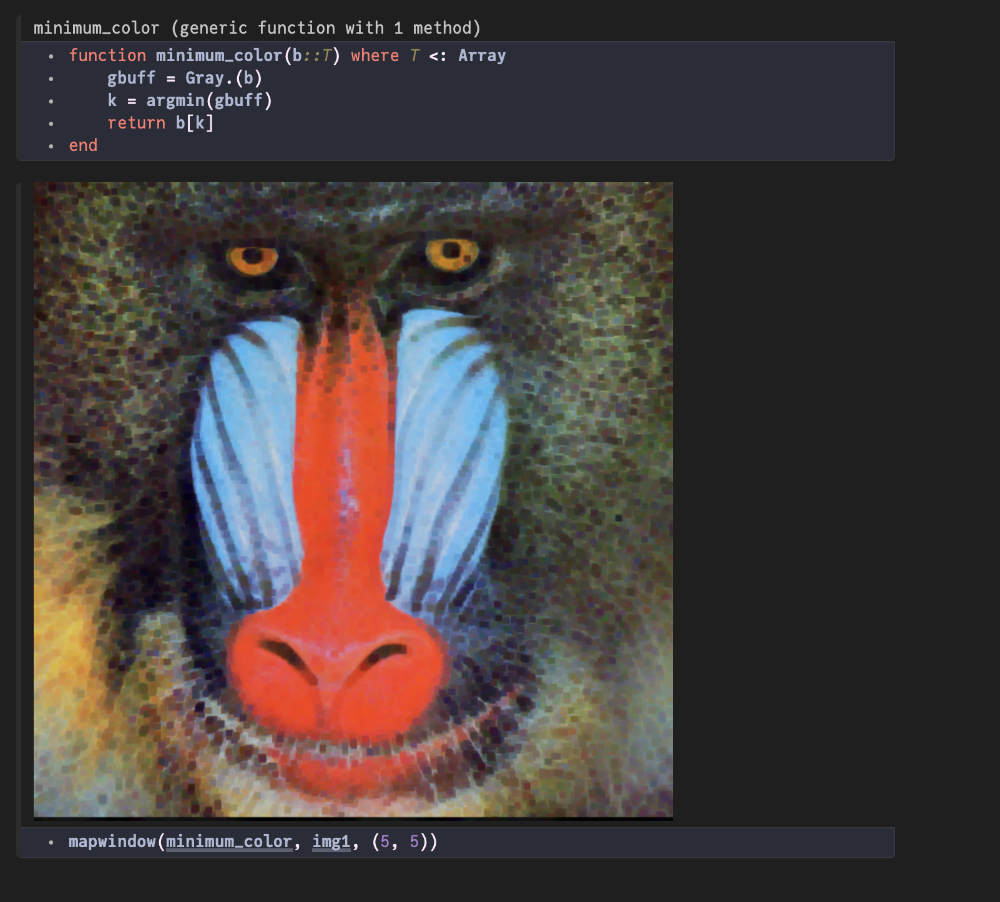

Tutorial
About this tutorial
This is a short introduction to ImageFilters.jl, using a Pluto notebook. If you're familiar with the basics of using Pluto, you're ready to follow along.
First steps
Open a Pluto notebook and load the following packages:
using ImageFiltering, TestImages, PlutoUI, ImageShow, Colors, ImagesWe'll use the image of the mandrill from TestImages.jl:
img1 = testimage("mandrill")
Blurring an image
To make a blurred version of the image, we can use a Gaussian filter kernel, using the Kernel.gaussian() function. A value of 10 is quite blurry:
img2 = imfilter(img1, Kernel.gaussian(10))It's also possible to use an array as a kernel. This 3 × 3 array in k is a good example of a sharpening filter: the central pixel will be boosted.
k = [0 -1 0 ; -1 5.5 -1 ; 0 -1 0]img3 = imfilter(img1, k)
Applying a function to each pixel
The mapwindow() function provides a way to slide a rectangular "window" over every pixel, and apply a function to that pixel using the surrounding pixel values. The window can be m pixels across and n pixels down; m and n must both be odd.
By default every pixel is visited.
This example uses a 13 × 13 window, and randomly selects just one of the 169 pixels in that window as the new value for the pixel.
mapwindow(b -> b[rand(1:end)], img1, (13, 13))The result is like a dithered/downsampled version of the image.

In the next example, this short function is used to convert the buffer to gray values, find the lowest (minimum) value of the windowed area, then select the colored pixel at that point. The resulting image is thus a darker and less detailed version of the original.
function minimum_color(buff::T) where T <: Array
gbuff = Gray.(buff)
k = argmin(gbuff)
return buff[k]
end
mapwindow(minimum_color, img1, (5, 5))